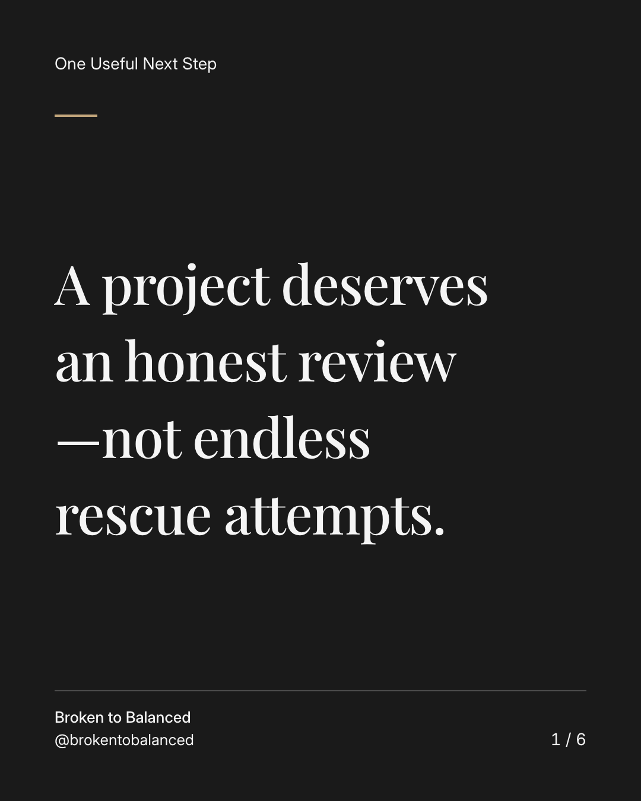
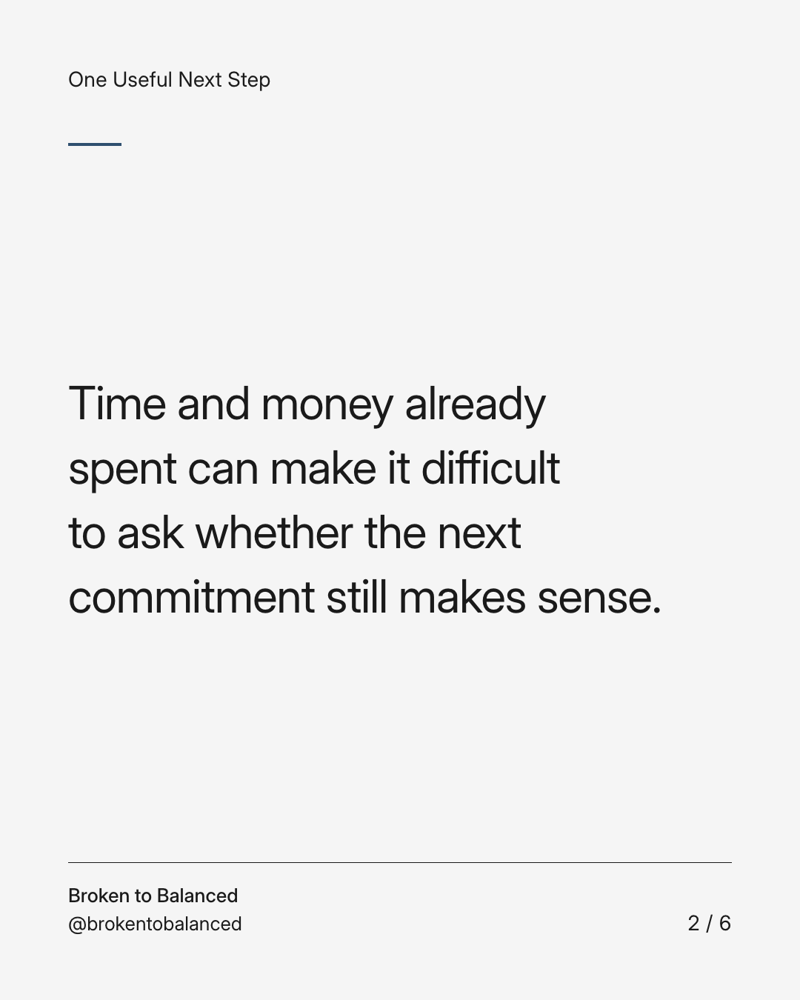
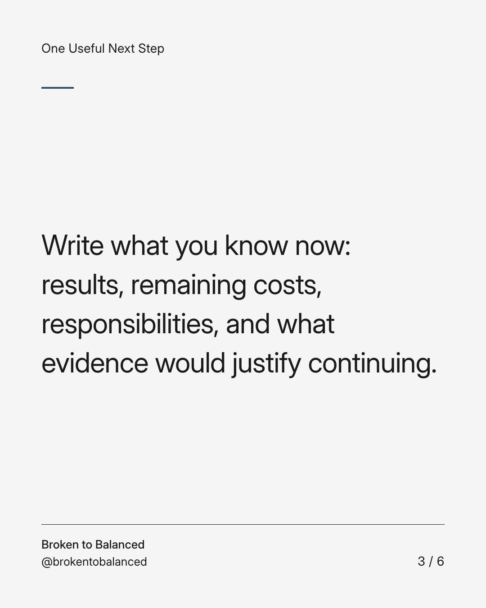
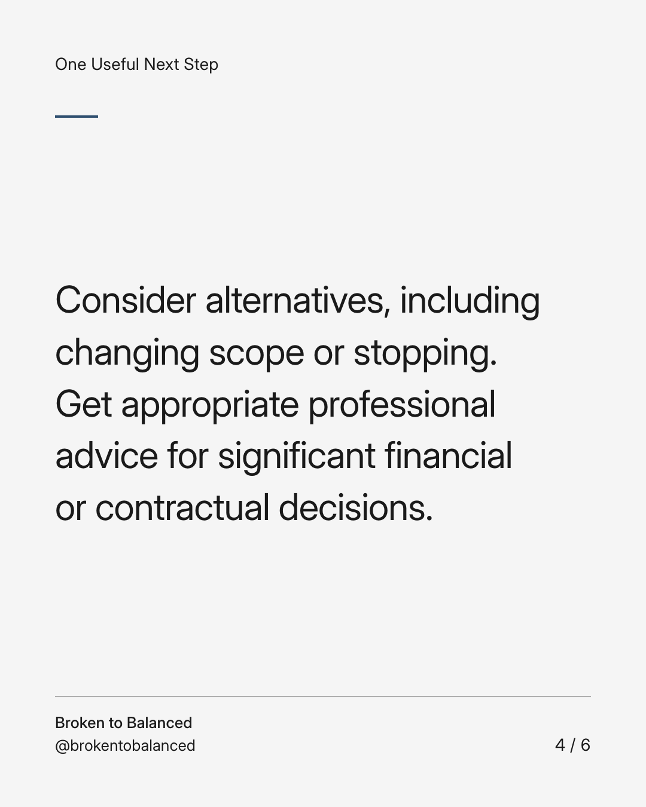
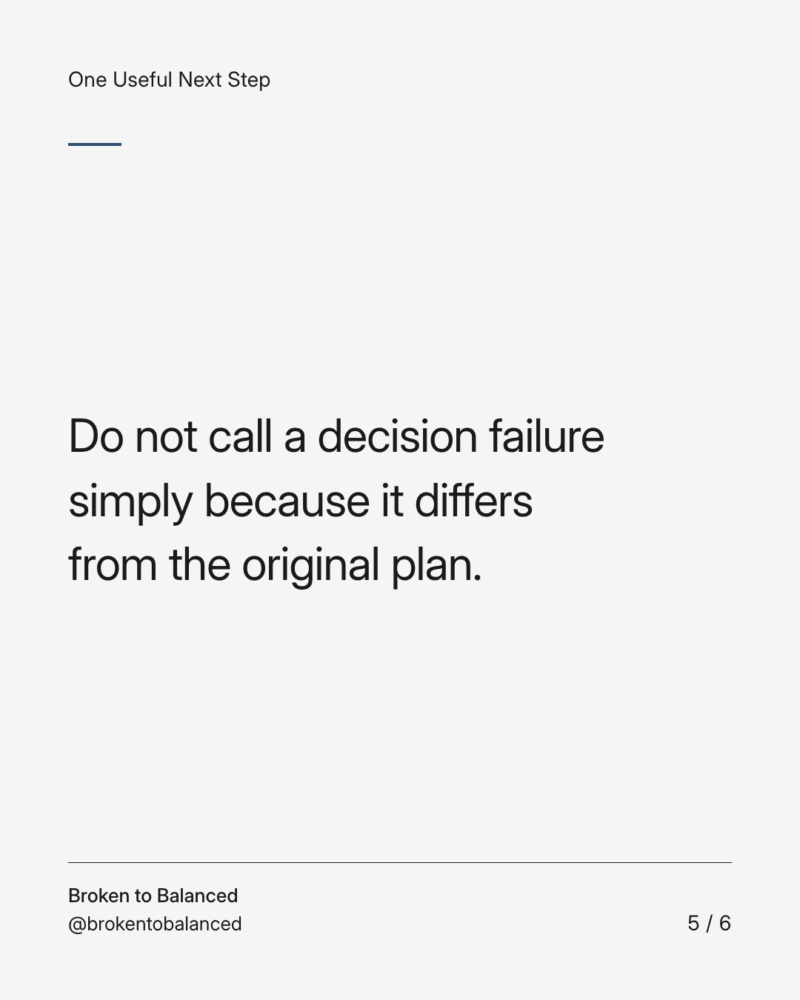
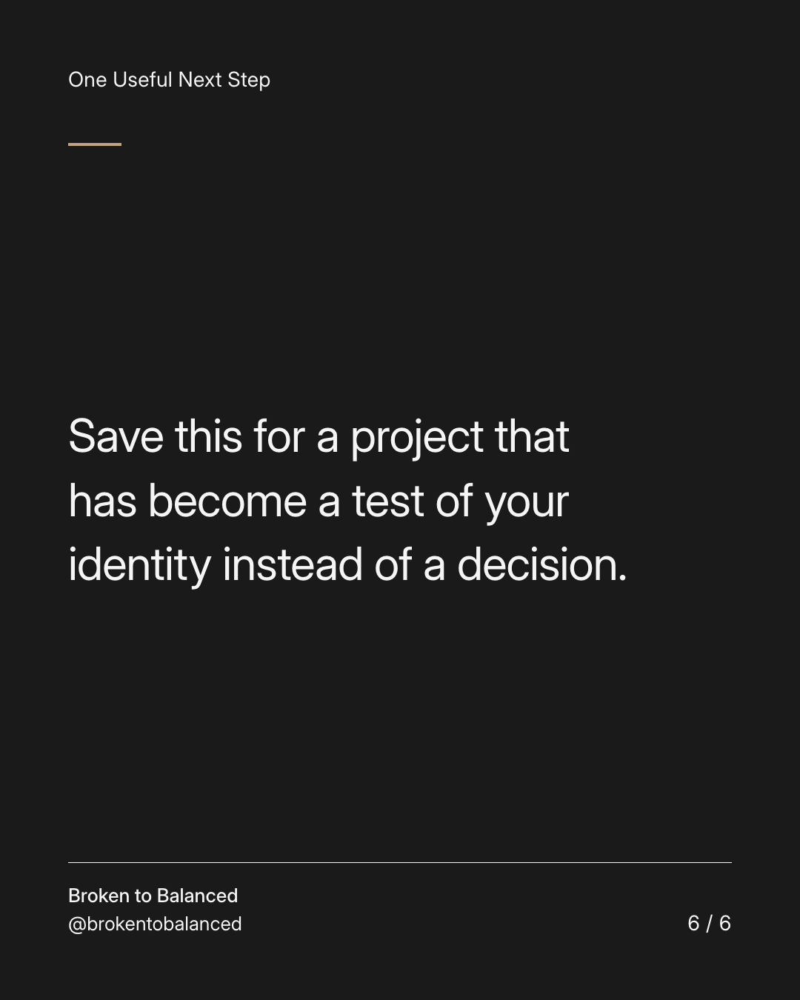

Exact text and accessibility text
A project deserves an honest review—not endless rescue attempts.
Slide 1 of 6. A project deserves an honest review—not endless rescue attempts.


Exact text and accessibility text
Time and money already spent can make it difficult to ask whether the next commitment still makes sense.
Slide 2 of 6. Time and money already spent can make it difficult to ask whether the next commitment still makes sense.


Exact text and accessibility text
Write what you know now: results, remaining costs, responsibilities, and what evidence would justify continuing.
Slide 3 of 6. Write what you know now: results, remaining costs, responsibilities, and what evidence would justify continuing.


Exact text and accessibility text
Consider alternatives, including changing scope or stopping. Get appropriate professional advice for significant financial or contractual decisions.
Slide 4 of 6. Consider alternatives, including changing scope or stopping. Get appropriate professional advice for significant financial or contractual decisions.


Exact text and accessibility text
Do not call a decision failure simply because it differs from the original plan.
Slide 5 of 6. Do not call a decision failure simply because it differs from the original plan.


Exact text and accessibility text
Save this for a project that has become a test of your identity instead of a decision.
Slide 6 of 6. Save this for a project that has become a test of your identity instead of a decision.
Exact caption
Plain-text fallback: select and copy the caption.